FPGA[5]_Serdes介绍与Aurora使用说明
SerDes
简单来说，该通信协议将设备内部的并行数据转为串行发送出去，接收端再将数据转回并行。
SerDes（Serializer / Deserializer）是把并行数据转换为高速串行数据（发送端的 Serializer），
以及把高速串行数据恢复成并行数据（接收端的 Deserializer）的电路模块或 IP。
它的目标是以尽可能少的物理通道（差分对或光纤通道）传输尽量高的数据速率，同时保持可靠性（低误码率）和可控延迟。
Serdes具有以下优点：
- 减少布线冲突（非独立时钟嵌入在数据流中，解决了限制数据传输速率的Signal时钟的Jilter问 题）；带宽高 ；
- 引脚数目少 ；
- 抗噪声、抗干扰能力强（差分传输）；
- 降低开关噪声；
- 扩展能力强；
- 更低的功耗和封装成本；
根据SerDes的结构的不同可以将其分为四类：
- 并行时钟SerDes
并行时钟 SerDes 的工作方式是将并行宽总线串行化为多个差分信号对，与此同时，还会传送与数据并联的时钟。在一些大型数据中心的服务器背板连接场景中，众多处理器、存储单元之间的数据交互量极大，并行时钟 SerDes 就能派上用场。通过电缆或背板，高效地扩展宽总线，实现高速数据传输。而且这种 SerDes 成本相对较低，对于那些需要大规模部署、对成本较为敏感，同时又有较高数据传输需求的应用场景来说，是一种性价比很高的选择。
- 8B/10B编码SerDes
8B/10B 编码 SerDes 是最为常见的结构。它会把每个数据字节映射到 10bit 代码，随后将其串行化为单一信号对。这里的 10 位代码一方面为接收器时钟恢复提供了足够的转换，让接收器能精准地从数据流中抓取时钟信息；另一方面，还保证了直流平衡，即发送相等数量的‘1’和‘0’，使得信号传输更加稳定、可靠。在长距离的光纤通信网络中，信号经过光纤传输时难免会有损耗、失真，8B/10B 编码 SerDes 就能凭借其特性，在这样有损耗的互连和光纤传输中以较少的信号失真高速运行。
- 嵌入式时钟SerDes
将数据总线和时钟串化为一个串行信号对。两个时钟位，一高一低，在每个时钟循环中内嵌串行数据流，对每个串行化字的开始和结束成帧，并且在串行流中建立定期的上升边沿。
由于有效负载夹在嵌入式时钟位之间，因此数据有效负载字宽度并不限定于字节的倍数；
- 位交错SerDes
能够将多个输入串行流中的位汇聚为更快的串行信号对。在高速的电信传输网络里，比如 4G、5G 基站之间的数据传输链路，需要处理大量不同来源的低速串行数据流，位交错 SerDes 可以把这些低速流整合起来，转化为高速串行信号，大大提升传输效率，
SerDes支持非常多的的主流工业标准，比如Serial RapidIO ，FiberChannel（FC），PCI-Express （PCIE），Advanced Switching Interface，Serial ATA（SATA），1-Gb Ethernet，10-Gb Ethernet（XAUI），Infiniband 1X，4X，12X等。
基本结构与工作原理

- Serializer（串行器）
- 接受并行数据,按位/按符号序列化成高速串行流。
- 可选：并行数据缓冲、并行位反序（bit ordering）、并加上编码（例如 8b/10b、64b/66b、scrambler）。
- 提供发射端前置均衡（pre-emphasis、de-emphasis、FFE 预加重等）。
- 物理收发电路（PHY）
- 发射器（TX）：电流驱动或电压驱动、差分输出、前置均衡、驱动幅度控制（VOD）。
- 接收器（RX）：低噪声放大器（LNA/CTLE）、时钟数据恢复（CDR）、采样 ADC（PAM4）或比较器、后置均衡（FFE/DFE）、PLL/VCXO。
- Deserializer（解串器）
- 将接收到的高速串行位流按时钟恢复并恢复成并行字（lane-to-parallel），提供锁相时钟和并行输出缓冲（elastic buffer）。
- 并行数据输入（主机侧） → Serializer：将并行字按比特顺序串出。
- 编码 / 加扰（可选）→ 降低直流分量、控制频谱、便于同步（例如 8b/10b）。
- 发射端均衡 / 驱动：对高频损耗的补偿（预加重）并差分驱动物理介质（铜缆或光电模块）。
- 信道传输：介质产生幅度衰减、色散、串扰、噪声。
- 接收端放大与 CTLE：恢复信号并对高频做主动增益补偿。
- 采样与 CDR（时钟数据恢复）：锁相采样点（采样位中心）。
- 后置均衡（FFE/DFE）与判决：抵消 ISI（码间串扰）并做决策。
- 解码 / 反加扰 → Deserializer：并行输出并上交给上层（MAC/逻辑）。
- 链路训练 / 回退：若链路质量不佳，可协商速率、均衡系数或启用 前向纠错FEC。
GT协议
xilinx-7 FPGA系列提供了GT收发器（Gigabyte Transceiver）用以实现SerDes类通信。
7系列中，按支持的最高线速排序，GTP < GTX < GTH < GTZ。
GTP被用于A7系列，GTZ被用于少数V7系列。
从K7到V7，最常见的是GTX和GTH，GTH的最高线速比GTX稍微高一点点。
GTX和GTH的文档为UG476。结构上，GTX和GTH的基本结构大同小异。
基本构成

模块说明：
- PCS（物理编码层Physical Coding Sublayer）：
-
编码/解码：
在发送端，将并行接口的数据编码为能保证线路上的直流平衡（0和1的数量大致相等）和提供足够的跳变边沿的格式（如8B/10B编码）
( 对于8B/10B编码，由于传输过程中每8bit加入了2bit额外数据，因此传输效率不高于80%)
-
通道对齐：
通常用Lane指代GT通信中的串行通道。GT收发器支持使用多个Lane发送同一数据，这就需要在发送时进行数据通道分配，在接收时将数据重新对齐。
-
加扰/解绕：
在编码之前，对数据进行加扰操作，目的是打乱数据中可能出现的长串“0”或长串“1”，减少电磁干扰并降低信号频率的集中度。 -
链路建立与管理：
-
PCS是纯数字逻辑，FPGA中固化了相关逻辑电路，比手动实现更高效。
- PMA（物理介质层Physical Medium Attachment）：
- 串行化/解串行化：
发送端将并行数据转为串行数据，接收端将串行数据转回并行数据；
- 时钟产生与恢复：
在发送端，PMA需要根据参考时钟产生精确的高速串行时钟。
在接收端，从数据流本身（通过0到1和1到0的跳变）来提取和恢复出时钟信号，并用这个恢复的时钟来采样数据。这个技术称为CDR。
- 驱动与均衡：
发送端： PMA的发射机负责将串行化的数字信号，转换成模拟信号，并驱动到物理通道上。为了补偿通道（如PCB走线）对高频信号的衰减，发射机通常包含预加重 或去加重 技术，预先增强高频分量。
接收端： 信号经过长距离传输后会发生畸变和码间干扰。PMA的接收机包含均衡器，用于补偿信道损耗，重塑信号波形，以便能正确地采样。
- 串行化/解串行化：
PMA有一部分模拟电路，只能依赖于FPGA的物理实现。
在xilinx FPGA中，使用同一个GT参考时钟（gtrefclk）的收发器被划分为一个Quad，Quad内的GT收发器还可以使用相邻Quad的GT参考时钟。
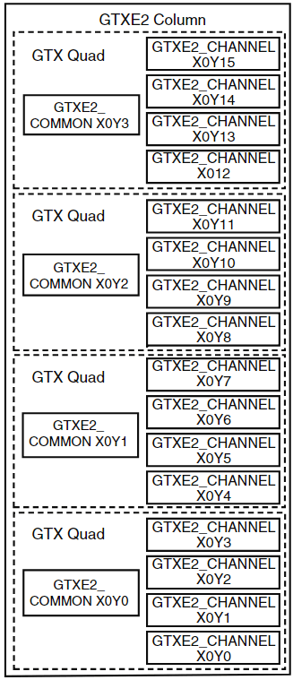
Aurora
GT收发器相对比较底层，不容易使用。
xilinx提供了一种封装协议：Aurora。
其能自动配置GT收发器，大大简化了用户配置成本。
Aurora 协议是一个用于在点对点串行链路间移动数据的可扩展轻量级链路层协议。
这为物理层提供透明接口，让专有协议或业界标准协议上层能方便地使用高速收发器。
Aurora协议在Xilinx的FPGA上有两种实现方式：8B/10B 与 64B/10B。
两个协议大部分相同，主要区别在编码方式上：
- Aurora 8B/10B：将8bit数据编码成10bit数码进行传输，尽量平衡数据中“0”和“1”的个数以实现DC平衡，显然这个编码方式的开销是20%，也就是效率为80%
- Aurora 64B/10B：将64bit数据编码成66bit块传输，66bit块的前两位表示同步头，主要由于接收端的数据对齐和接收数据位流的同步。同步头有“01”和“10”两种，“01“表示后面的64bit都是数据，“10”表示后面的64bit是数据信息。数据信息0和1不一定是平衡的，因此需要进行加扰，开销较小
Aurora 8B/10B 常用于芯片（FPGA）与芯片（FPGA）之间通信。
它用于使用一个或多个收发器在设备之间传输数据。连接可以是全双工（双向数据）或单工。
两者具备一定的差异，以下仅说明Aurora 8B/10B，基于官方文档PG046和UP766。

结合上图，简单阐述下Aurora 8B/10B的工作流：
Aurora支持全双工、只发送、只接收的配置。
基本逻辑：
flowchart LR
A[发送用户逻辑] -- 并行数据 --> B[Aurora IP]
B --> C[GT发送端]
C == 串行数据 ==> D[GT接收端]
D --> E[Aurora IP]
E --并行数据--> F[接收用户逻辑]
一个串行通道是一个
Lane，可以将多个Lane配置为一个Channel，增加通信速率。
构成
以下阐述Aurora 8B/10B的各个部分。
时钟
Aurora 8B/10B可分为两部分：
- shared logic
- core
在配置Aurora IP时，可以选择shared logic是否包含进模块内，
如果选择包含，那么只需要给生成的IP模块相应的时钟输入就行，
并且该模块还会输出相关信号提供给裸core的模块使用。
如果选择不包含，即成为裸core的模块，
可以使用外部定义shared logic输出信号（在example design中可查看），
或如上所述包含shared logic的模块的输出信号，
作为裸模块的输入。
shared logic本质上就是相关时钟的配置。
以下介绍裸core的时钟相关的输入输出信号：
可分为三部分：
-
初始化时钟（init_clk_in）：
用于初始化的时钟，在IP配置界面必须明确其频率，不然会无法正确初始化。
各个Aurora 模块的init_clk可以共用，也可以不关联，只要满足不大于user_clk即可。
- gt参考时钟（gt_refclk1）：
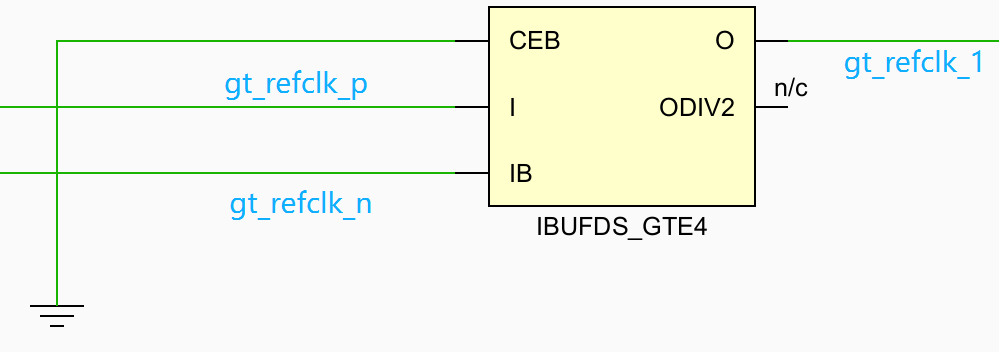
将gt参考差分时钟输入到原语IBUFDS_GTE4（能将差分时钟转换为适用gt收发器的单端时钟），输出的便是输入到Aurora模块的gt时钟。
- 用户时钟
这一部分处理在example design中封装在clock_module中：
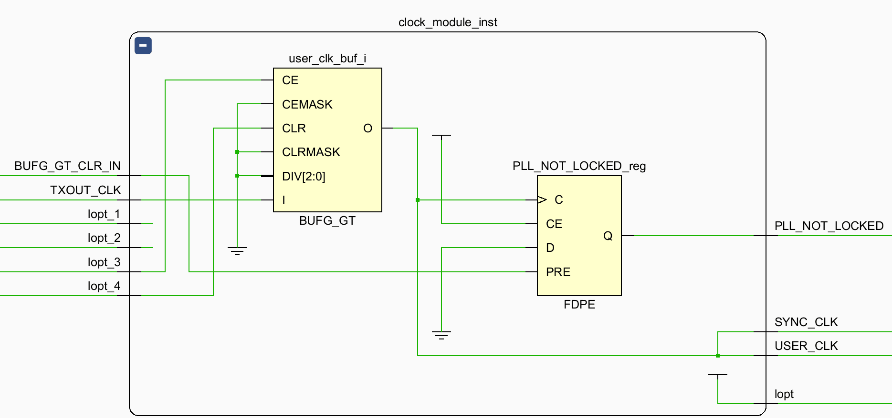
输出：
- tx_out_clk：
gt收发器将gtrefclk经过内部pll处理后得到tx_out_clk，供给shared logic。
输入：
- user_clk与sync_clk：
shared logic中将tx_out_clk通过原语BUFG_GT（可将gt时钟连接到全局时钟网络）得到user_clk和sync_clk。
user_clk是给用户执行对Aurora模块相关操作时所使用的时钟。
sync_clk是在Aurora 内核中给GT收发器进行内部同步的时钟。
在example design中，sync_clk = user_clk。
- bufg_gt_clr与PLL_NOT_LOCKED：
bufg_gt_clr来自gt收发器，
在shared logic中，只有当bufg_gt_clr = 0且user_clk正常时，PLL_NOT_LOCKED才会为0，通知aurora内核时钟正常。
对于只需要一个
channel的场景，
在IP配置页面直接使用include Shared logic in core即可，这样最简单；
而对于需要使用多个
channel的场景，（注意区分channel和lane）
特别是只有一对gtrefclk的情况，最好是选择include Shared logic in example design，
然后仿照example design搭建shared logic。
此时有两点要注意：
- gtrefclk只能在FPGA物理布局
同一列（同一“X”）的Quad中共享，；- 此时每一个裸core的aurora模块都会输出tx_out_clk，可以只使用其中一个，即只生成一个user_clk，
再将该user_clk返回给各aurora模块，这样便能实现对各模块的用户操作同步。
以下是简要示意图：

数据端口（in userclk）
Aurora 8B10B通信分为两种模式：
- 帧（Frame）
数据帧之间有停止信号（tlast）。帧的长度是不限制的，为Lane Width的整数倍，
（对于aurora 8B10B，其为2 Bytes或4 Bytes）
每个user_clk发送一字（Lane Width）数据，
发送最后一字时，可通过指定tkeep来声明该字中哪些字节是有效的，哪些是无效的。 - 流（Stream）
没有停止信号，可以一直传输。
帧模式接口
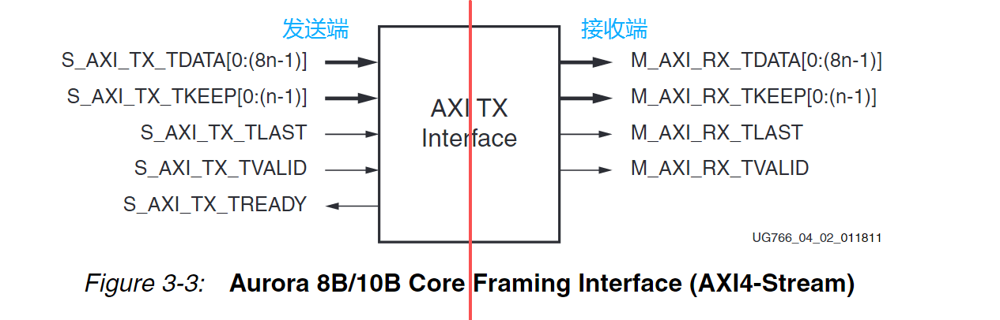
对发送端，
每个user_clk上升沿，
若tready信号有效（代表Aurora内核允许用户写入数据），用户可写入Lane Width的数据并维持tvaild为高；
当写入最后一个数据时，用户将tlast置高，并根据需要设置tkeep,
在下一个时钟上升沿将tvaild、tlast拉低，表示结束本帧。tready也会置低。
如果发送的数据是
Lane Width的整数倍，那么不需要操作tkeep，保持为高即可。
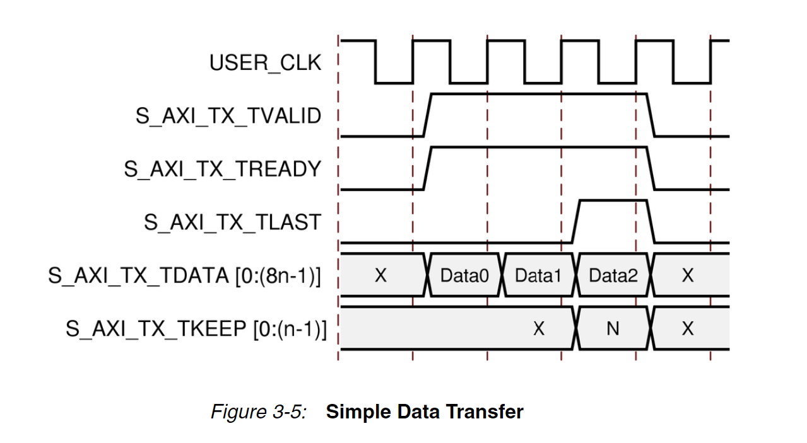
在发送过程中如果tready不为高，代表上一clk的数据没有被aurora读取，应当保持原值，
直到重新检测到tready变高。
在发送过程中tready随时可能置低，这是因为aurora需要通道每
10,000字节发送一段时钟补偿（cc）序列（用户接收端会忽略），此时会中断数据传输。
运输暂停大概在三或六时钟周期。
在发送过程中用户可以随时拉低tvaild表示暂停（因为没有tlast，这不代表帧的结束），直到重新拉高tvaild。
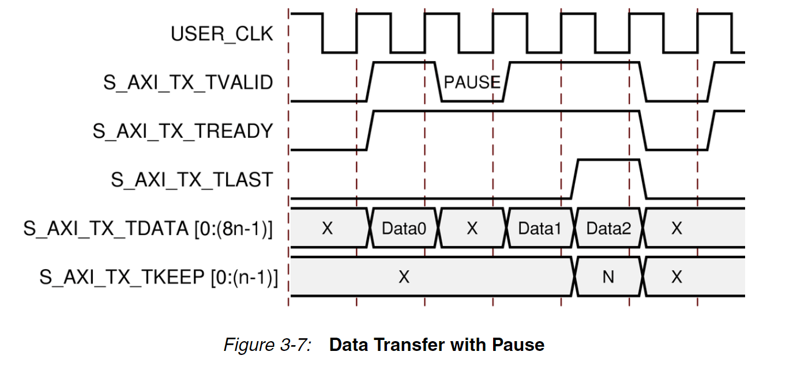
注意区分通信链路的各个环节，用户交互的始终是aurora提供的接口，而不是接收端。
实际上在线抓取信号可以看到，用户发送端的发送帧都写入完了(tvaild都置低了)，用户接收端tvaild都还没置高。
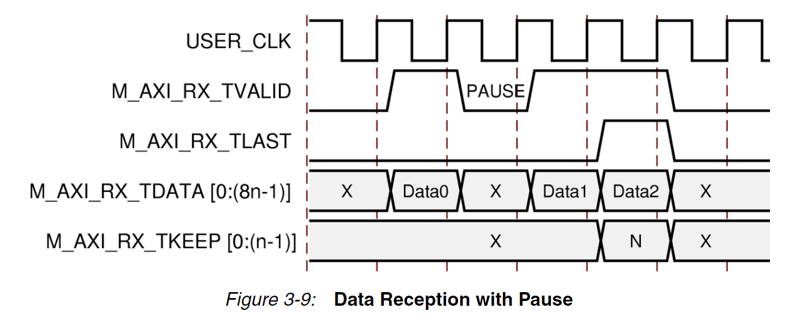
对接收端,
若tvaild信号有效，用户采样Lane Width宽度的数据；
当读取到tlast为高，表示这是最后一字，此时需要根据tkeep确定本字的有效字节数,
在下一个时钟上升沿tvaild、tlast都将拉低，表示结束本帧。
在接收过程中tvaild也随时可能置低，此时代表本次采样到的数据无效，需要在下一时钟再次采样。
流模式接口
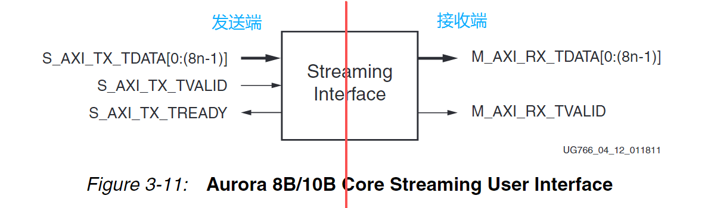
相较于帧模式，去掉了tlast和tkeep，但是每个USER_CLK还是只能发一字（Lane Width）的数据，其余都是差不多的。
状态与控制接口
全双工、只发送、只接收的状态与控制接口不太一样，这里只介绍全双工的。
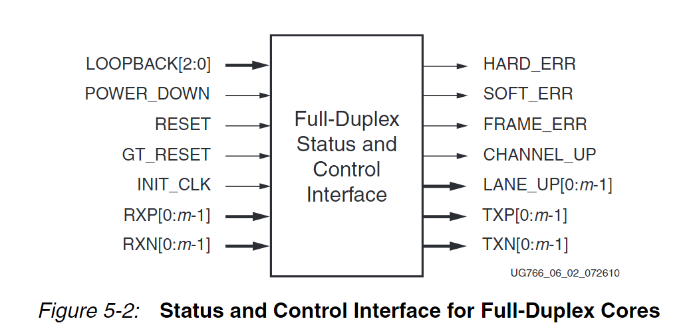
| 信号 | 说明 |
|---|---|
| POWER_DOWN | 置高时表示关闭GT收发器，用以节省能耗。没有这个需求的直接置低就行 |
| RXP/RXN | GT收发器的接收差分引脚 |
| TXP/TXN | GT收发器的发送差分引脚 |
| HARD_ERR | 高电平有效，表示出现硬件（严重）错误（如buffer上/下溢） 出现后会自动触发Aurora core复位并尝试重新初始化 |
| SOFT_ERR | 高电平有效，表示出现软件错误（普通），只会置位一个clk 当短时间内出现大量此错误也会导致复位 |
| FRAME_ERR | 高电平有效，表示出现帧错误（普通） |
| LNAE_UP | lane初始化并与对方握手成功时该信号对应bit会置高， 只有当所有bit都置高时，Aurora 内核才能接收数据 可以用来判断物理链路是否断开 |
| CHANNEL_UP | 当LANE_UP所有bit置高时，并且内核可以接收数据时，才会置高 可以用来判断是否能开始通信 |
| gt_reset | 高电平有效，GT收发器的复位 FPGA上电时必须置高 保持高电平至少6个init_clk 当gt_reset被置高时，USER_clk会停止 |
| reset | 高电平有效，Aurora core的复位 该信号必须在USER_CLK稳定后才置低 |
复位信号的配置
- 对于全双工core在正常运行的情况下，置位
reset信号，会在3个user_clk后拉低channel_up信号：
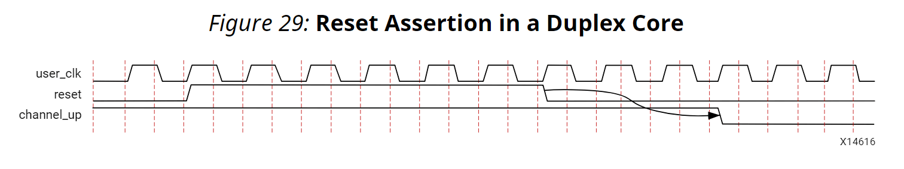
- 对于全双工core在正常运行的情况下，置位
gt_reset信号至少6个init_clk，一段时间后user_clk会停止,channel_up信号也会拉低：
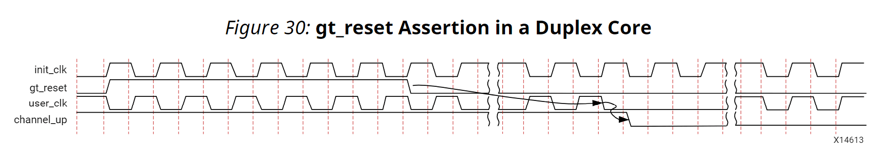
- FPGA上电时，对于全双工core，
gt_reset和reset信号都要置高。等待一段init_clk后，gt_reset先置低，而reset信号在user_clk的时钟域中置低（换言之，当user_clk稳定后才置低）

- 对于全双工core，要执行普通复位，必须先将
reset信号置位至少128个user_clk，然后才置位gt_reset。gt_reset置位足够长的时间后，需要先置低，等到user_clk稳定后再置低reset信号。
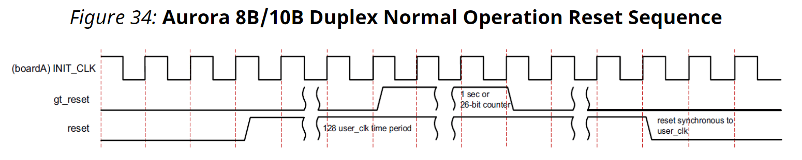
对于复位的设计可参照example design的xxx_support_reset_logic模块,
以下是简化后的复位信号处理逻辑：
1 |
|
CRC
在帧模式中，
aurora提供对传输数据进行CRC校验的功能。
对Lane Width = 2 bytes，为CRC16；
对Lane Width = 4 bytes，为CRC32.
CRC操作由内核完成，不需要用户操作。
在接收端，内核为CRC结果提供了两个信号：
crc_vaild与crc_pass_fail_n
当且仅当crc_vaild为高时，
crc_pass_fail_n的结果才是有意义的，为高时表示本次传输CRC校验成功。
这两个信号都是user_clk时钟域下的。
必须明确的是，实际测试下来，
crc_vaild置高时并不代表接收已经完成，根据实际抓取的波形来看，至少需要延迟两拍才能确认接收已经完成。
1 |
|
加扰/解扰(Scrambler/Descrambler)
在发送端对数据进行加扰，打乱数据中可能出现的长串“0”或长串“1”，减少电磁干扰并降低信号频率的集中度。
热插拔
Aurora 8B/10B支持热插拔。当物理链路断开时，对应Lane_up信号也会置低，直到重新连上。
时钟补偿
时钟补偿功能允许在Aurora 8B/10B通道的每一侧使用的参考时钟频率高达±100 ppm的差异。
IP配置
不同的版本、器件其IP配置有所不同，以实际为准。
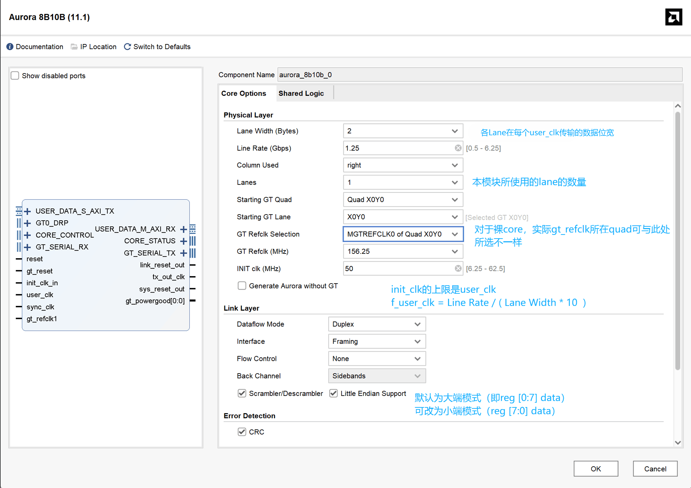
GT Refclk的频率选择不是随意的，具体关系为：
E为编码效率，对于Aurora 8B10B，为8/10 = 0.8
D为内部PLL倍频因子，为整数。
因此如果Lane Rate可在一定范围内选择，而想要合适的user_clk,则需要根据以上关系选择合适的GTREFCLK。